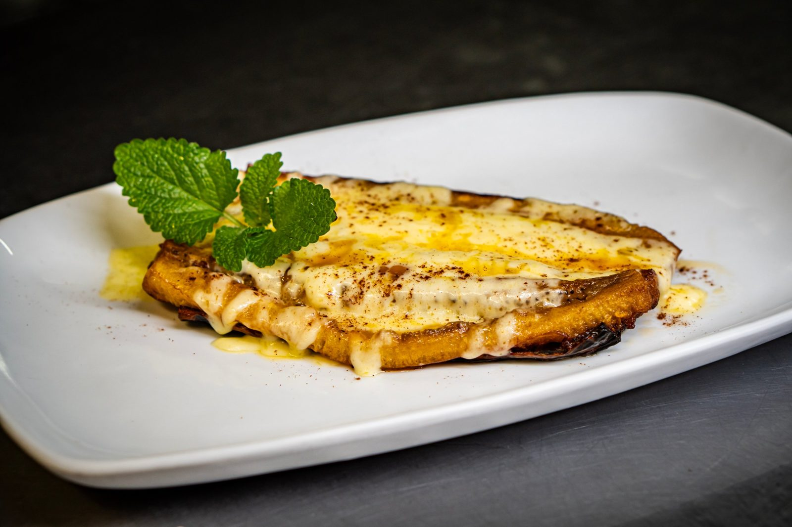
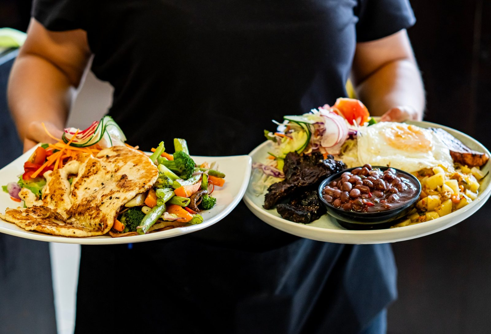
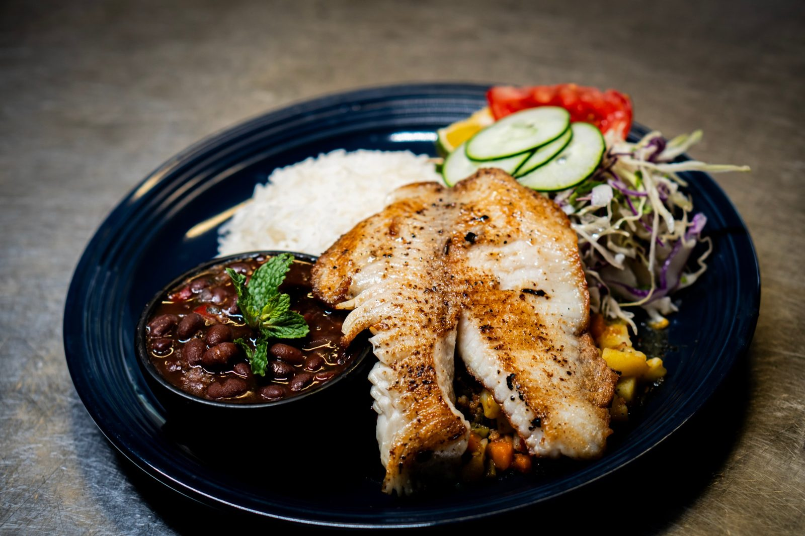
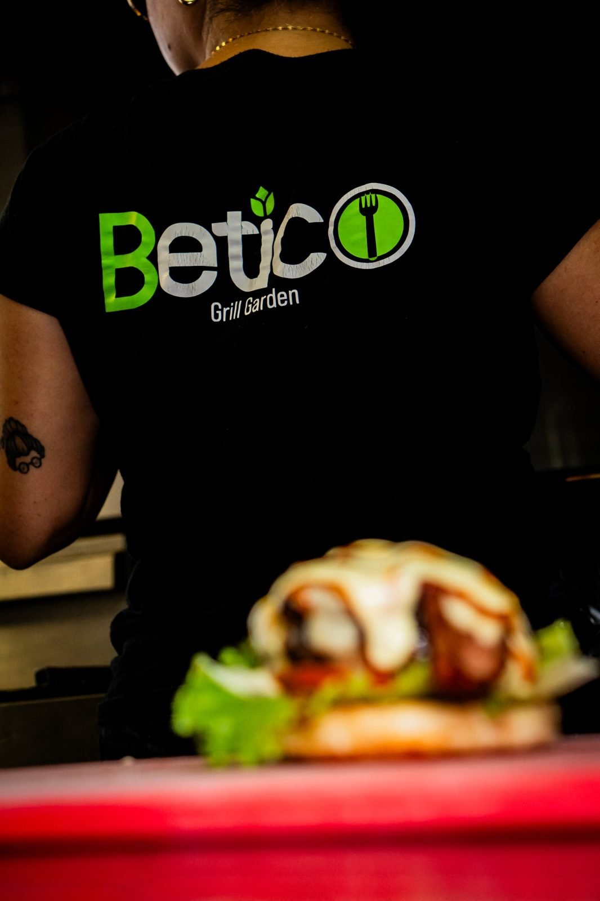

Maduro con queso
Canoa de plátano maduro con queso gratinado.
₡1900
En BETICO Grill Garden mezclamos lo mejor de la cocina costarricense con el sabor de la parrilla: casados, gallos, tacos, arroces, pastas y platos a la plancha preparados con ingredientes frescos.
Un lugar para compartir con familia y amigos, desde algo para pasar el rato hasta un buen casado del día.
Ver el menú completo
Canoa de plátano maduro con queso gratinado.
₡1900Arroz, frijoles frescos, picadillo del día, ensalada del huerto, huevo frito y plátanos maduros.
desde ₡5500
Pescado a la plancha con arroz, frijoles, picadillo y ensalada.
₡5500
“Hecho con sabor tico, servido con cariño.”